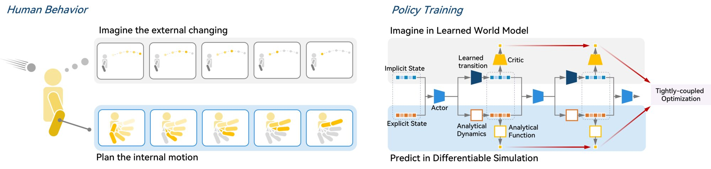
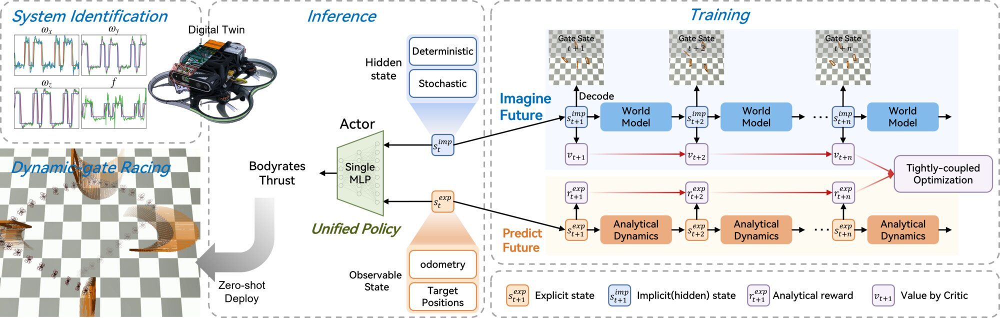
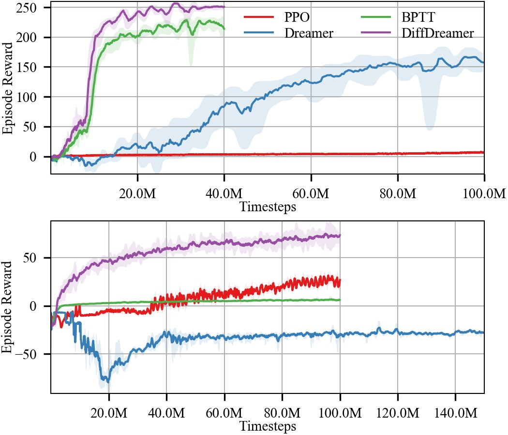
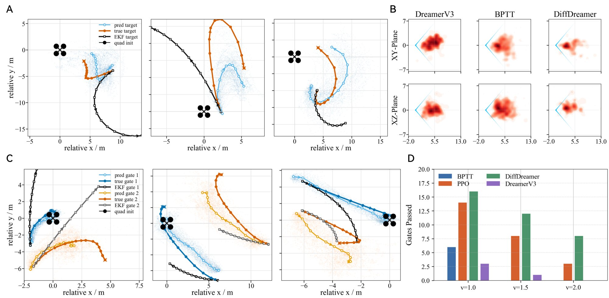
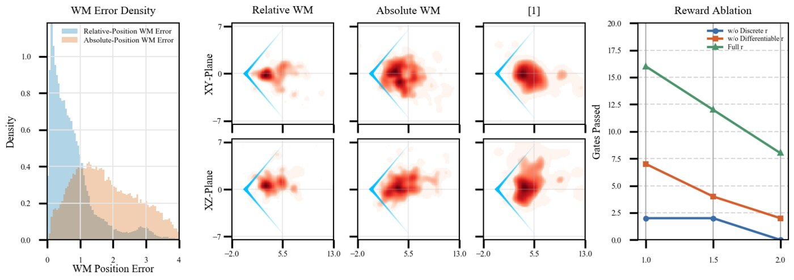

Coupling World Models with Differentiable Simulation for Agile Quadrotor Control
A world model (a network that learns to predict what happens next) imagines where the moving gates or target will go.
A differentiable simulator (physics code you can take gradients through) predicts where the drone itself will go.
The same action drives both rollouts, and one policy is trained on gradients from both. Result: 8 gates passed at 2 m/s, vs 3 for PPO and 1 for MPC.
Racing through moving gates mixes things that are easy to compute (the drone's rigid-body physics) with things you can only guess from history (where a gate is heading). Existing methods put everything on one side.
| DreamerV3 world-model RL | BPTT differentiable RL | DiffDreamer | |
|---|---|---|---|
| Gate / target motionfuture unknown, depends on history | world model | not predictedsees only current gate position | world model |
| Drone motionNewton–Euler rigid body, Eq. 8 | world modellearned, so it can be biased | simulatorexact physics gradients | simulator |
| Smooth motion rewarde.g. speed toward the gate | criticlearned value estimate | backprop through sim | backprop through sim |
| Gate-pass bonus0, or k₃ when the drone passes | critic | no gradienta jump from 0 to k₃ has no slope | critic |


Each step, the actor reads the latent state and the drone state, picks action \(a_t\), and that one action advances both the world model and the simulator. Pick a path to see where its gradient flows.
DiffDreamer is built from two known recipes. Here are the pieces it borrows, then the three equations it changes.
The actor sees only the latent \(s_t^{imp} = (h_t, z_t)\) from an RSSM (recurrent state-space model: a GRU memory \(h_t\) plus a random code \(z_t\)). It is trained to raise the critic's value \(\hat{\mathcal V}_t\) along imagined rollouts of length \(T\).
The critic learns the λ-return: a blend of "reward now + my value guess next step" and "the longer imagined return". \(c_t\) is 0 if the episode ends. Here \(\hat r_t\) covers all rewards.
Backprop through time: every reward is pushed back through the chain of simulator Jacobians (orange) to every earlier action. These Jacobians are exact, not learned, so the gradient has low variance. But it only works if the reward is smooth and the dynamics are known.
Full nonlinear quadrotor: world-frame position \(\mathbf p_W\) (m) and velocity \(\mathbf v_W\) (m/s), attitude quaternion \(\mathbf q\), body rates \(\boldsymbol\Omega\) (rad/s). Thrust \(\mathbf f_B = [0,0,f]^\top\) acts along body z. Euler steps make each Jacobian simple.
Joint state. The actor and critic see both the latent (gate motion patterns) and the explicit drone state \(\{\mathbf p, \mathbf v, \mathbf q, \boldsymbol\Omega\}\). sg (stop-gradient) feeds the latent in as a fixed number: no gradient flows back into it through this input.
Critic only learns the jumpy part. Same as Eq. 4, but \(\hat r_t\) is replaced by \(r_t^{disc}\), the non-differentiable reward (gate passed or not). Smooth rewards are left to the simulator.
Dual-pathway actor loss. \(\mathcal L_{imp}\): raise the critic's value (covers gate-pass bonuses and the future beyond \(T\)). \(\mathcal L_{exp}\): raise the smooth motion reward, with exact gradients through the simulator (Eq. 6). World-model and critic weights stay frozen during this step; only \(\theta\) moves.
Policy input (Eq. 14): positions of the next two gates relative to the drone, plus \(\mathbf v, \mathbf q, \boldsymbol\Omega\). Output: collective thrust and body rates (CTBR), \(a_t = [f^d, \omega_x^d, \omega_y^d, \omega_z^d]\).
All methods are trained in the VisFly simulator (PyTorch, differentiable) with the same observations and rewards, 5 seeds each. Tracking keeps a fast 3-D target centered in the camera at a fixed distance; racing passes four moving gates in a loop.
| method | v = 1.0 m/s | 1.5 m/s | 2.0 m/s |
|---|---|---|---|
| DreamerV3 | |||
| BPTT | |||
| PPO | |||
| MPC | |||
| DiffDreamer |
Table II, mean over 5 random environments. v = max gate speed. Higher is better. Bar length: 4 px per gate.
| method | |e_h| | |e_v| | distance |e_d| (m) |
|---|---|---|---|
| DreamerV3 | 0.318 | 0.314 | |
| BPTT | 0.198 | 0.235 | |
| Elastic Tracker | 0.333 | 0.382 | |
| DiffDreamer | 0.168 | 0.215 |
Table I. |e_h|, |e_v|: target's offset from image center (unitless). Bar length is proportional to distance error (60 px = 1.003 m).


